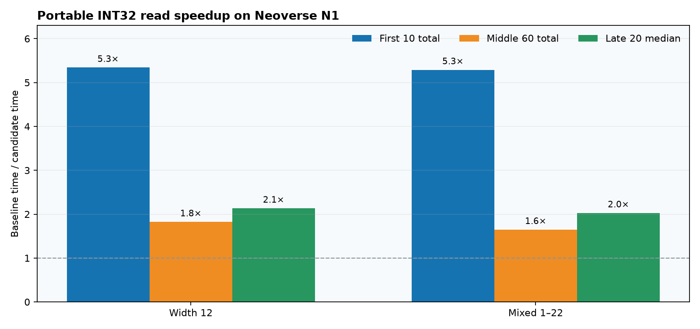

ARM INT32 PR #153 validation
September 29, 2026 · Neoverse N1 · exact PR head 6920dca against master 60c4749 · published Plank public API · 100 ordered ColdStart iterations · CPU isolation. The candidate passed 1,095 ARM64 tests.

| Case | First ten total, base → candidate | Middle sixty total | Late twenty median |
|---|---|---|---|
| Width 12 | 3240.8 → 606.5 ms | 5128.9 → 2812.6 ms | 71.56 → 33.53 ms |
| Mixed 1–22 | 3315.7 → 626.8 ms | 4768.6 → 2893.0 ms | 70.48 → 34.75 ms |